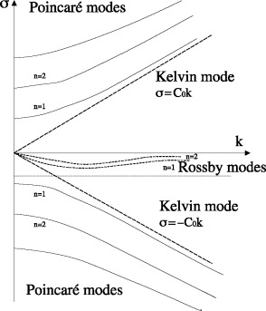
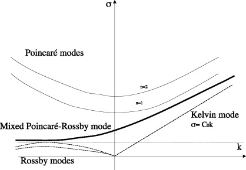

An examination of \(\boxed{\frac{\partial v}{\partial t} + fu = -g \frac{\partial \eta}{\partial y}}\)
reveals fundamental differences between
Poincaré waves away from boundaries and Kelvin waves. For a Poincaré wave, the crests
are horizontal, and the absence of a transverse pressure gradient requires a \( \frac{\partial v}{\partial t} \) to
balance the Coriolis acceleration, resulting in elliptic orbits. In a Kelvin wave, a transverse
velocity is prevented by a geostrophic balance of \( fu \) and \( -g \frac{\partial \eta}{\partial y} \)
- The Poincaré wave solutions are produced in the presence of a height perturbation in a rotating shallow water system
- The Kelvin waves require the presence of a boundary (or the equator)
- The Rossby waves require the presence of a gradient in potential vorticity

Dispersion diagram for shallow water in a channel

Dispersion diagram for shallow water in the equatorial waveguide
◀
▶